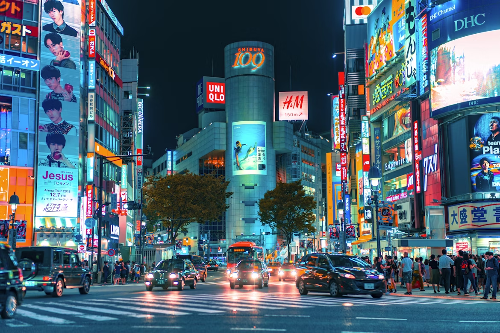

Exploring Japan: A Cultural Journey
Japan is a country of contrasts, blending ancient traditions with modern innovation. Its landscapes vary from bustling cities like Tokyo to serene temples in Kyoto, providing visitors with a variety of experiences.
The cherry blossom season, known as Sakura, is one of the most celebrated events. Parks and streets fill with pink petals, symbolizing beauty and the transient nature of life.
Japanese cuisine is an art in itself. From sushi and ramen to street foods and sweets, each dish emphasizes freshness, presentation, and flavor. Dining is not just a meal but an experience.
Traditional arts such as tea ceremonies, calligraphy, and ikebana (flower arranging) are deeply rooted in Japanese culture. They reflect mindfulness, aesthetics, and the careful attention to detail characteristic of Japanese society.
Traveling through Japan allows you to witness a society that values harmony, efficiency, and innovation simultaneously. From the Shinkansen high-speed trains to centuries-old shrines, the country offers a fascinating journey for every traveler.